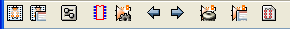

A janela Componentes pode estar vazia se nenhum arquivo foi carregado, e a janela Módulos pode estar vazia se nenhuma biblioteca de módulos foi encontrada.
4.2 - Barra de ferramentas da tela principal

 Associação
automática componentes/módulos a partir dos arquivos
de equivalência.
Associação
automática componentes/módulos a partir dos arquivos
de equivalência.
A utilização deste comando
supõe que se dispõe evidentemente desses arquivos.
Mostra o componente anterior não associado a um módulo, até o primeiro.
 Mostra
o próximo componente não associado a um módulo,
até o último.
Mostra
o próximo componente não associado a um módulo,
até o último.
 Cancelamento
total de todas as associações já efetuadas.
Cancelamento
total de todas as associações já efetuadas.
Geração de um arquivo de retro-anotação dos módulos.
 Abre
o arquivo de footprint (footprint.pdf).
Abre
o arquivo de footprint (footprint.pdf).
4.3 - Configuração do aplicativo CVPCB
4.3.1 - Tela Geral